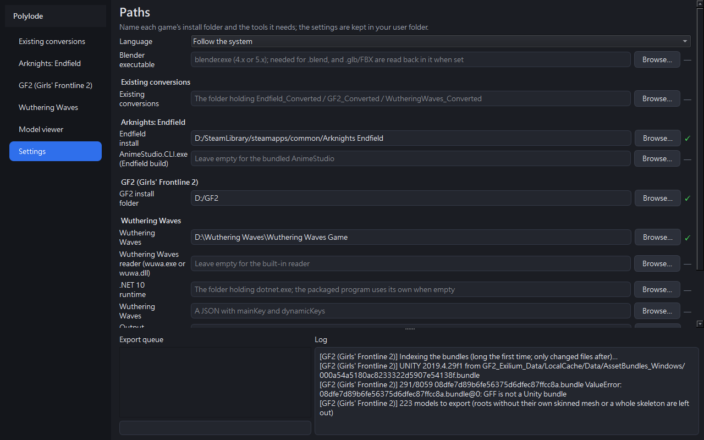
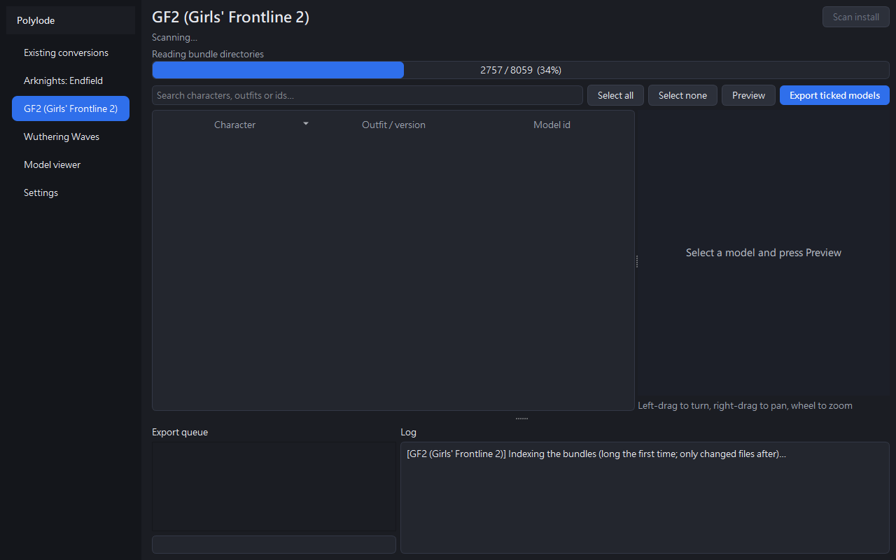
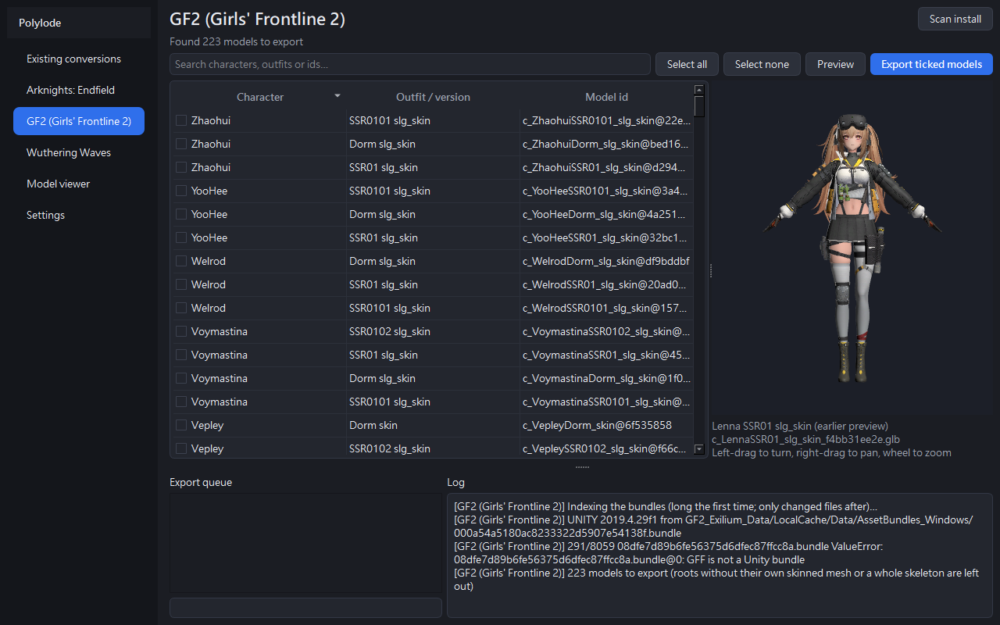
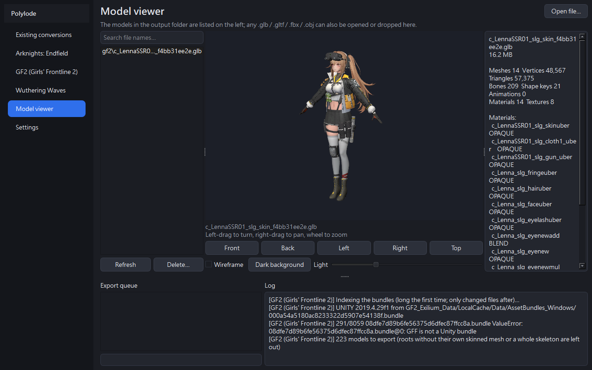

Polylode User Guide
Polylode reads the character models out of the games installed on your computer and writes them as textured,
rigged glTF (.glb), FBX and Blender (.blend) files. It reads Arknights: Endfield, Girls' Frontline 2: Exilium,
Wuthering Waves and finished conversions. The steps below follow the order you use it in.
1. Download and start
Take the latest Polylode-<version>-windows-x64.zip from Releases.
Anywhere, for example D:\Tools\Polylode. Nothing is installed; it carries what it needs: AnimeStudio (for Endfield),
the Wuthering Waves reader, a .NET 10 runtime, and a software OpenGL for computers without a GPU driver.
Polylode.exe
The window follows your Windows language; choose another under Settings → Language and it switches at once (English, 繁體中文, 简体中文, 日本語, 한국어).
.blend. Settings and every cache live in
%LOCALAPPDATA%\Polylode.2. Settings
Open the Settings page. Settings are saved as you type them; there is no Save button.

Where exports go, one folder per model: <output>\<game>\<model id>\.
Tick any of .glb, FBX and .blend. Polylode writes .glb and FBX itself; neither needs Blender.
Needed only for .blend: point it at blender.exe. With it set, every .glb and FBX is also read back in
Blender as a check.
Both may stay empty. The first scan asks for the install and offers the copies it finds in your Steam libraries; the game's folder, the one above it or one inside its data all work, and a ✓ marks a path that is there. Empty tool fields use what the program carries.
3. Getting each game ready
| Game | What you need | The first scan |
|---|---|---|
| Arknights: Endfield | The install folder | Builds its asset maps from the install: tens of minutes, in batches. Closing the program part way loses nothing; the next scan carries on. |
| Girls' Frontline 2: Exilium | The install folder | Indexes the bundles (minutes) and checks which roots are character models. |
| Wuthering Waves | The install folder and your own AES keys file | Reads its character tables out of the archives. |
Wuthering Waves' AES keys
Its files are encrypted and need the key for your client version, which the program cannot carry. A keys file is a JSON with
mainKey and dynamicKeys.
Before the first preview or export it looks for a keys file you already have: beside the program, in its data folder, in the install folder and the one above it, in Downloads, Documents and Desktop.
Choose your keys file, or paste the key (0x and 64 hexadecimal digits) and it is saved as a keys file. Either way it is remembered.
4. Scanning an install
The bar under the status line names the step and counts it where it can.

Until the game updates, later scans are quick. Scan again after an update; a GF2 preview or export says so when the install changed since its scan.
5. Searching and previewing
Type a character, outfit or id in the search box (Search characters, outfits or ids…).
The first preview of a model converts it (seconds to a minute, with its own bar); after that, selecting the row shows it from the cache at once. Each model is framed whole and centred when it loads.
Left-drag turns, right-drag pans, the wheel zooms.
A preview stays as it was first made. Convert again makes it anew after Polylode or the game is updated; the new one replaces the cached one only once it is done.

6. Ticking and exporting
Select all and Select none act on the rows the search shows.
The queue at the bottom runs them one at a time: ⏳ waiting, ▶ running, ✓ written, ✗ failed (the log beside it says why). The bar under the queue counts models; the one below it shows the step of the model being written. Closing the window while an export runs asks first.
They are in <output>\<game>\<model id>\, textures embedded; the .json beside them keeps the bone paths and
each material's native values.
7. Opening the exported files
| Format | For | What it holds |
|---|---|---|
.glb | Any 3D program or web viewer | Only the parts shown, so it looks like the preview everywhere. |
| FBX | Blender, Unity, Maya… | Also the hidden parts (lower detail levels, the other versions of swappable parts), opened hidden; show them when you need them. |
.blend | Blender | The hidden parts as in the FBX, and material layers kept as real layers. |
8. The model viewer

The list holds the models in your output folder, newest first. Or press Open file…, drop a file on the window, or start
Polylode.exe <file> (so it can be your "Open with" program). It opens .glb, .gltf, .fbx and .obj.
Front, Back, Left, Right and Top turn it; Wireframe, the background button and Light change how it is drawn. The panel on the right lists what a glTF holds (meshes, vertices, bones, shape keys, each material's blending) and marks a file written by older rules, to be exported again.
Delete… moves the model, its sibling files and its texture folder to the recycle bin.
Share on GitHub Pages… puts the .glb shown on your own web page, for Discord: see
Sharing on Discord.
9. Sharing on Discord (through GitHub Pages)
Discord cannot show a 3D model: a .glb posted there is only a download. Polylode shares a model as a page of its own on a
GitHub Pages site in your own GitHub account. The page turns the model in any browser, and its link shows in Discord as a card with the
model's picture. No clone is made; only a file over 12 MB needs Git installed, to push it (GitHub's upload API refuses larger
requests).
.glb and press Share on GitHub Pages…
In the model viewer. It names the address the model will be public at and asks before going on.
Your browser opens GitHub's sign-in page and the program shows a short code, already copied: enter it and authorize Polylode. It asks
only for public_repo (making and writing public repositories) and keeps the authorization on this computer, encrypted for
your Windows user. Settings → GitHub account → Sign out forgets it; GitHub's Settings → Applications revokes it.
It makes the public repository polylode-models in your account (once), then uploads models/<name>/: the
model, a 1200×630 card picture drawn as the preview shows it, and the page; with the site's front page listing every shared model, as one
commit. The log shows each step.
If Pages is not on for the repository yet, the message offers Open Pages settings: choose
Deploy from a branch, main, / (root) and Save. Turning it on from the program would need
access to all your private repositories, which it does not ask for.
The link is copied: https://<account>.github.io/polylode-models/models/<name>/. Pages takes a minute or two to
update. In Discord it shows as a card; opened, the page turns the model with the mouse or a finger.
.glb carries every pose its character screens play: the poses held
there come first and the moves between them follow (an Endfield character's ui clips, decoded from the install the
first time, about half a minute; a Girls' Frontline 2 outfit's clips off the battlefield — barracks, wardrobe, bedroom, ending —,
named once at the first export, a few minutes; a Wuthering Waves character's CommonAnim/UiAnim clips on its own
skeleton, decoded with the reader built from this version, an older reader leaves them out). The shared page has a
Pose menu to switch between them, and its card shows the first one. Settings → Poses
turns this off; previews never include them. Only the keys a pose needs are written (a key is left out where the motion between
its neighbours is within 0.1 mm and 0.01°), so a model with thirty-odd poses stays well under GitHub's 100 MB a file..glb can be shared, up to 100 MB (GitHub's file limit); sharing a model again replaces its page. The program's own folder is
refused as a site.Turning a model inside Discord (Discord Activity)
A link card in Discord is a picture. A Discord Activity is how you turn the model inside Discord: with a Discord application's Application ID under Settings → Discord Activity, the shared site's front page is also that application's Activity. Open it from Discord's Activities menu in a voice or text channel, pick a model, and turn it, zoom and switch its poses there.
In the Discord Developer Portal, your application: Activities → URL Mappings, root / to
<account>.github.io/polylode-models (no https://), and save.
Activities → Settings → Enable Activities (it asks for the mapping first); under Installation, tick User Install and Guild Install.
Its Application ID (General Information) under Settings → Discord Activity, then share any model again so the front page is written for it.
10. Troubleshooting
| What you see | What to do |
|---|---|
| A dialog or file picker opens before a scan, preview or export | A tool the conversion needs is not set and was not found where the program looks. For Wuthering Waves it is the AES keys file: choose it or paste the key; it is remembered. |
| "“…” is not set" or "“…” does not exist" in the log | Fix that path under Settings. |
No .blend written | Set the Blender executable under Settings. |
| "This file's size could not be measured" in the viewer | Its extent could not be read (an FBX 7.5 file, for one); the view is at the origin, zoom with the wheel. |
| A preview and an older export look different | An update may have changed the rules: press Convert again for the preview and export the model again. |
| "cannot be drawn, made invisible" in the log | That material could not be written as the game draws it; it is made invisible with its reason, never drawn as a grey surface. |
| "git push failed" when sharing | Git cannot push to the site's repository: sign in to GitHub in Git (for example with Git Credential Manager) and check that you can push from that folder yourself. |
| "The site folder's origin is not a GitHub repository" | The site folder must be a clone of a GitHub repository. |
| A shared link shows no card, or the page is not found | Pages is not turned on for the repository, the repository is private on a free plan, or Pages has not updated yet: wait a minute or two. |
| Anything else | The log at the bottom keeps every line the scan or export printed. |